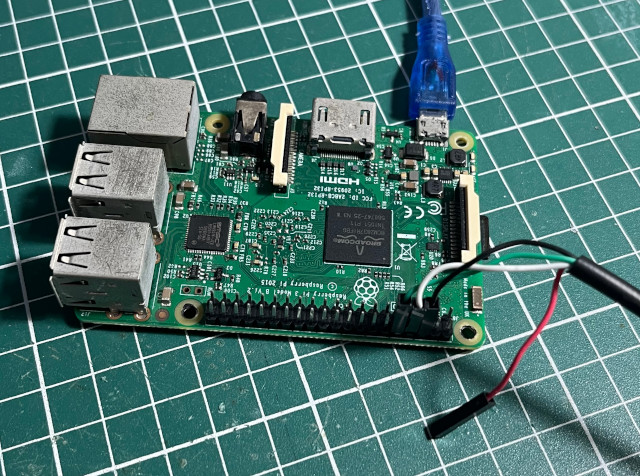

<!DOCTYPE html PUBLIC "-//W3C//DTD XHTML 1.0 Strict//EN" "http://www.w3.org/TR/xhtml1/DTD/xhtml1-strict.dtd">
<html xmlns="http://www.w3.org/1999/xhtml" xml:lang="en" lang="en">
<head><script type="text/javascript" src="../page_head.js"></script>

<h3><a href="../mcu.htm">微處理器</a> - Broadcom BCM2837 (Raspberry Pi 3) - Bookworm - <b>安裝系統</b></h3>
<hr size="1"><br>
<p>
參考資訊：<br>
https://www.raspberrypi.com/software/operating-systems/<br>
https://piepie.com.tw/10842/raspberry-pi-3-uart-overlay-workaround<br><br>
</p>
<pre>
$ cd
$ wget https://downloads.raspberrypi.com/raspios_armhf/images/raspios_armhf-2025-05-13/2025-05-13-raspios-bookworm-armhf.img.xz
$ xz -d 2025-05-13-raspios-bookworm-armhf.img.xz
$ sudo dd if=2025-05-13-raspios-bookworm-armhf-lite.img of=/dev/sdX bs=1M

$ vim /xxx/bootfs/config.txt
    [all]
        dtoverlay=miniuart-bt
        core_freq=250
        enable_uart=1

$ sudo chroot /xxx/rootfs

root@debian:/# passwd pi
</pre><br>

<p>
連接UART<br>
<br>
P.S. 第一次開機後，系統加載需要30秒，接著系統會重新開機，即可看到UART輸出<br><br>

Baudrate 115200bps
</p>
<pre>
[    0.000000] Booting Linux on physical CPU 0x0                                                                         
[    0.000000] Linux version 6.12.25+rpt-rpi-v7 (serge@raspberrypi.com) (arm-linux-gnueabihf-gcc-12 (Raspbian 12.2.0-14+rpi1) 12.2.0, GNU ld (GNU Binutils for Raspbian) 2.40) #1 SMP Raspbian 1:6.12.25-1+rpt1 (2)
[    0.000000] CPU: ARMv7 Processor [410fd034] revision 4 (ARMv7), cr=10c5383d                                           
[    0.000000] CPU: div instructions available: patching division code
[    0.000000] CPU: PIPT / VIPT nonaliasing data cache, VIPT aliasing instruction cache
[    0.000000] OF: fdt: Machine model: Raspberry Pi 3 Model B Rev 1.2
[    0.000000] random: crng init done
[    0.000000] Memory policy: Data cache writealloc
[    0.000000] Reserved memory: created CMA memory pool at 0x1e400000, size 256 MiB
[    0.000000] OF: reserved mem: initialized node linux,cma, compatible id shared-dma-pool
[    0.000000] OF: reserved mem: 0x1e400000..0x2e3fffff (262144 KiB) map reusable linux,cma
[    0.000000] Zone ranges:
[    0.000000]   DMA      [mem 0x0000000000000000-0x000000003b3fffff]
[    0.000000]   Normal   empty
[    0.000000] Movable zone start for each node
[    0.000000] Early memory node ranges
[    0.000000]   node   0: [mem 0x0000000000000000-0x000000003b3fffff]
[    0.000000] Initmem setup node 0 [mem 0x0000000000000000-0x000000003b3fffff]
[    0.000000] percpu: Embedded 19 pages/cpu s45708 r8192 d23924 u77824
[    0.000000] Kernel command line: coherent_pool=1M 8250.nr_uarts=1 snd_bcm2835.enable_headphones=0 cgroup_disable=memory snd_bcm2835.enable_headphones=1 snd_bcm2835.enable_hdmi=1 snd_bcm2835.enable_hdmi=0  vct
[    0.000000] cgroup: Disabling memory control group subsystem
[    0.000000] Dentry cache hash table entries: 131072 (order: 7, 524288 bytes, linear)
[    0.000000] Inode-cache hash table entries: 65536 (order: 6, 262144 bytes, linear)
[    0.000000] Built 1 zonelists, mobility grouping on.  Total pages: 242688
[    0.000000] mem auto-init: stack:all(zero), heap alloc:off, heap free:off
[    0.000000] SLUB: HWalign=64, Order=0-3, MinObjects=0, CPUs=4, Nodes=1
[    0.000000] ftrace: allocating 37294 entries in 110 pages
[    0.000000] ftrace: allocated 110 pages with 5 groups
[    0.000000] rcu: Hierarchical RCU implementation.
[    0.000000]  Rude variant of Tasks RCU enabled.
[    0.000000]  Tracing variant of Tasks RCU enabled.
[    0.000000] rcu: RCU calculated value of scheduler-enlistment delay is 10 jiffies.
[    0.000000] RCU Tasks Rude: Setting shift to 2 and lim to 1 rcu_task_cb_adjust=1 rcu_task_cpu_ids=4.
[    0.000000] RCU Tasks Trace: Setting shift to 2 and lim to 1 rcu_task_cb_adjust=1 rcu_task_cpu_ids=4.
[    0.000000] NR_IRQS: 16, nr_irqs: 16, preallocated irqs: 16
[    0.000000] rcu: srcu_init: Setting srcu_struct sizes based on contention.
[    0.000000] arch_timer: cp15 timer(s) running at 19.20MHz (phys).
[    0.000000] clocksource: arch_sys_counter: mask: 0xffffffffffffff max_cycles: 0x46d987e47, max_idle_ns: 440795202767 ns
[    0.000001] sched_clock: 56 bits at 19MHz, resolution 52ns, wraps every 4398046511078ns
[    0.000018] Switching to timer-based delay loop, resolution 52ns
[    0.000438] Console: colour dummy device 80x30
[    0.000459] printk: legacy console [tty1] enabled
[    0.001302] Calibrating delay loop (skipped), value calculated using timer frequency.. 38.40 BogoMIPS (lpj=192000)
[    0.001354] CPU: Testing write buffer coherency: ok
[    0.001425] pid_max: default: 32768 minimum: 301
[    0.001559] LSM: initializing lsm=capability
[    0.001810] Mount-cache hash table entries: 2048 (order: 1, 8192 bytes, linear)
[    0.001857] Mountpoint-cache hash table entries: 2048 (order: 1, 8192 bytes, linear)
[    0.003208] CPU0: thread -1, cpu 0, socket 0, mpidr 80000000
[    0.090348] Setting up static identity map for 0x100000 - 0x10003c
[    0.090568] rcu: Hierarchical SRCU implementation.
[    0.090599] rcu:     Max phase no-delay instances is 1000.
[    0.090954] Timer migration: 1 hierarchy levels; 8 children per group; 1 crossnode level
[    0.110296] smp: Bringing up secondary CPUs ...
[    0.160601] CPU1: thread -1, cpu 1, socket 0, mpidr 80000001
[    0.210606] CPU2: thread -1, cpu 2, socket 0, mpidr 80000002
[    0.260660] CPU3: thread -1, cpu 3, socket 0, mpidr 80000003
[    0.260791] smp: Brought up 1 node, 4 CPUs
[    0.260890] SMP: Total of 4 processors activated (153.60 BogoMIPS).
[    0.260920] CPU: All CPU(s) started in HYP mode.
[    0.260942] CPU: Virtualization extensions available.
[    0.261712] Memory: 666468K/970752K available (11264K kernel code, 1513K rwdata, 3440K rodata, 1024K init, 376K bss, 39216K reserved, 262144K cma-reserved)
[    0.262408] devtmpfs: initialized
[    0.275578] VFP support v0.3: implementor 41 architecture 3 part 40 variant 3 rev 4
[    0.275847] clocksource: jiffies: mask: 0xffffffff max_cycles: 0xffffffff, max_idle_ns: 19112604462750000 ns
[    0.275917] futex hash table entries: 1024 (order: 4, 65536 bytes, linear)
[    0.285744] pinctrl core: initialized pinctrl subsystem
[    0.287167] NET: Registered PF_NETLINK/PF_ROUTE protocol family
[    0.289431] DMA: preallocated 1024 KiB pool for atomic coherent allocations
[    0.294884] audit: initializing netlink subsys (disabled)
[    0.295191] audit: type=2000 audit(0.290:1): state=initialized audit_enabled=0 res=1
[    0.295816] thermal_sys: Registered thermal governor 'step_wise'
[    0.296182] hw-breakpoint: found 5 (+1 reserved) breakpoint and 4 watchpoint registers.
[    0.296244] hw-breakpoint: maximum watchpoint size is 8 bytes.
[    0.296598] Serial: AMBA PL011 UART driver
[    0.305128] bcm2835-mbox 3f00b880.mailbox: mailbox enabled
[    0.320593] raspberrypi-firmware soc:firmware: Attached to firmware from 2025-04-30T13:35:18, variant start
[    0.330606] raspberrypi-firmware soc:firmware: Firmware hash is 5560078dcc8591a00f57b9068d13e5544aeef3aa
[    0.344783] kprobes: kprobe jump-optimization is enabled. All kprobes are optimized if possible.
[    0.352447] bcm2835-dma 3f007000.dma-controller: DMA legacy API manager, dmachans=0x1
[    0.354873] SCSI subsystem initialized
[    0.355131] usbcore: registered new interface driver usbfs
[    0.355199] usbcore: registered new interface driver hub
[    0.355269] usbcore: registered new device driver usb
[    0.355732] pps_core: LinuxPPS API ver. 1 registered
[    0.355761] pps_core: Software ver. 5.3.6 - Copyright 2005-2007 Rodolfo Giometti <giometti@linux.it>
[    0.355815] PTP clock support registered
[    0.357556] clocksource: Switched to clocksource arch_sys_counter
[    0.358099] VFS: Disk quotas dquot_6.6.0
[    0.358153] VFS: Dquot-cache hash table entries: 1024 (order 0, 4096 bytes)
[    0.371703] NET: Registered PF_INET protocol family
[    0.372189] IP idents hash table entries: 16384 (order: 5, 131072 bytes, linear)
[    0.374748] tcp_listen_portaddr_hash hash table entries: 512 (order: 0, 4096 bytes, linear)
[    0.374811] Table-perturb hash table entries: 65536 (order: 6, 262144 bytes, linear)
[    0.374857] TCP established hash table entries: 8192 (order: 3, 32768 bytes, linear)
[    0.374995] TCP bind hash table entries: 8192 (order: 5, 131072 bytes, linear)
[    0.375345] TCP: Hash tables configured (established 8192 bind 8192)
[    0.375505] UDP hash table entries: 512 (order: 2, 16384 bytes, linear)
[    0.375581] UDP-Lite hash table entries: 512 (order: 2, 16384 bytes, linear)
[    0.375805] NET: Registered PF_UNIX/PF_LOCAL protocol family
[    0.376372] RPC: Registered named UNIX socket transport module.
[    0.376405] RPC: Registered udp transport module.
[    0.376429] RPC: Registered tcp transport module.
[    0.376451] RPC: Registered tcp-with-tls transport module.
[    0.376476] RPC: Registered tcp NFSv4.1 backchannel transport module.
[    0.378282] Trying to unpack rootfs image as initramfs...
[    1.683571] Freeing initrd memory: 10644K
[    2.584425] Initialise system trusted keyrings
[    2.584796] workingset: timestamp_bits=14 max_order=18 bucket_order=4
[    2.585705] NFS: Registering the id_resolver key type
[    2.585751] Key type id_resolver registered
[    2.585776] Key type id_legacy registered
[    2.585831] nfs4filelayout_init: NFSv4 File Layout Driver Registering...
[    2.585864] nfs4flexfilelayout_init: NFSv4 Flexfile Layout Driver Registering...
[    2.586658] Key type asymmetric registered
[    2.586690] Asymmetric key parser 'x509' registered
[    2.586783] Block layer SCSI generic (bsg) driver version 0.4 loaded (major 247)
[    2.586822] io scheduler mq-deadline registered
[    2.586849] io scheduler kyber registered
[    2.586920] io scheduler bfq registered
[    2.589179] pinctrl-bcm2835 3f200000.gpio: GPIO_OUT persistence: yes
[    2.607792] ledtrig-cpu: registered to indicate activity on CPUs
[    2.610401] simple-framebuffer 3eaa9000.framebuffer: framebuffer at 0x3eaa9000, 0x151800 bytes
[    2.610511] simple-framebuffer 3eaa9000.framebuffer: format=a8r8g8b8, mode=720x480x32, linelength=2880
[    2.615707] Console: switching to colour frame buffer device 90x30
[    2.622712] simple-framebuffer 3eaa9000.framebuffer: fb0: simplefb registered!
[    2.628793] Serial: 8250/16550 driver, 1 ports, IRQ sharing enabled
[    2.633357] bcm2835-rng 3f104000.rng: hwrng registered
[    2.636212] vc-mem: phys_addr:0x00000000 mem_base=0x3ec00000 mem_size:0x40000000(1024 MiB)
[    2.652976] brd: module loaded
[    2.663057] loop: module loaded
[    2.666270] Loading iSCSI transport class v2.0-870.
[    2.670381] usbcore: registered new interface driver lan78xx
[    2.672934] usbcore: registered new interface driver smsc95xx
[    2.675343] dwc_otg: version 3.00a 10-AUG-2012 (platform bus)
[    3.405923] Core Release: 2.80a
[    3.408359] Setting default values for core params
[    3.410763] Finished setting default values for core params
[    3.613393] Using Buffer DMA mode
[    3.615719] Periodic Transfer Interrupt Enhancement - disabled
[    3.618152] Multiprocessor Interrupt Enhancement - disabled
[    3.620616] OTG VER PARAM: 0, OTG VER FLAG: 0
[    3.623076] Dedicated Tx FIFOs mode
[    3.627074] 
[    3.627082] WARN::dwc_otg_hcd_init:1072: FIQ DMA bounce buffers: virt = 9e504000 dma = 0xde504000 len=9024
[    3.634040] FIQ FSM acceleration enabled for :
[    3.634040] Non-periodic Split Transactions
[    3.634040] Periodic Split Transactions
[    3.634040] High-Speed Isochronous Endpoints
[    3.634040] Interrupt/Control Split Transaction hack enabled
[    3.644961] 
[    3.644968] WARN::hcd_init_fiq:457: FIQ on core 1
[    3.648942] 
[    3.648947] WARN::hcd_init_fiq:458: FIQ ASM at 808daf84 length 36
[    3.652945] 
[    3.652950] WARN::hcd_init_fiq:496: MPHI regs_base at bb810000
[    3.657067] dwc_otg 3f980000.usb: DWC OTG Controller
[    3.659242] dwc_otg 3f980000.usb: new USB bus registered, assigned bus number 1
[    3.661449] dwc_otg 3f980000.usb: irq 89, io mem 0x00000000
[    3.663625] Init: Port Power? op_state=1
[    3.665740] Init: Power Port (0)
[    3.668042] usb usb1: New USB device found, idVendor=1d6b, idProduct=0002, bcdDevice= 6.12
[    3.672317] usb usb1: New USB device strings: Mfr=3, Product=2, SerialNumber=1
[    3.674589] usb usb1: Product: DWC OTG Controller
[    3.676822] usb usb1: Manufacturer: Linux 6.12.25+rpt-rpi-v7 dwc_otg_hcd
[    3.679145] usb usb1: SerialNumber: 3f980000.usb
[    3.682231] hub 1-0:1.0: USB hub found
[    3.684506] hub 1-0:1.0: 1 port detected
[    3.687733] usbcore: registered new interface driver usb-storage
[    3.690181] mousedev: PS/2 mouse device common for all mice
[    3.694834] sdhci: Secure Digital Host Controller Interface driver
[    3.697100] sdhci: Copyright(c) Pierre Ossman
[    3.699635] sdhci-pltfm: SDHCI platform and OF driver helper
[    3.701996] hid: raw HID events driver (C) Jiri Kosina
[    3.704375] usbcore: registered new interface driver usbhid
[    3.706672] usbhid: USB HID core driver
[    3.715063] hw perfevents: enabled with armv7_cortex_a7 PMU driver, 7 (8000003f) counters available
[    3.720932] Initializing XFRM netlink socket
[    3.723338] NET: Registered PF_PACKET protocol family
[    3.725798] Key type dns_resolver registered
[    3.728448] Registering SWP/SWPB emulation handler
[    3.762742] registered taskstats version 1
[    3.765302] Loading compiled-in X.509 certificates
[    3.780391] Key type .fscrypt registered
[    3.782696] Key type fscrypt-provisioning registered
[    3.796051] 3f215040.serial: ttyS0 at MMIO 0x3f215040 (irq = 86, base_baud = 31250000) is a 16550
[    3.800861] serial serial0: tty port ttyS0 registered
[    3.807730] Indeed it is in host mode hprt0 = 00021501
[    3.808228] bcm2835-wdt bcm2835-wdt: Broadcom BCM2835 watchdog timer
[    3.813148] bcm2835-power bcm2835-power: Broadcom BCM2835 power domains driver
[    3.816791] mmc-bcm2835 3f300000.mmcnr: mmc_debug:0 mmc_debug2:0
[    3.819454] mmc-bcm2835 3f300000.mmcnr: DMA channel allocated
[    3.850539] uart-pl011 3f201000.serial: there is not valid maps for state default
[    3.853173] uart-pl011 3f201000.serial: cts_event_workaround enabled
[    3.855895] 3f201000.serial: ttyAMA0 at MMIO 0x3f201000 (irq = 114, base_baud = 0) is a PL011 rev2
[    3.860828] printk: legacy console [ttyAMA0] enabled
[    4.017962] usb 1-1: new high-speed USB device number 2 using dwc_otg
[    4.026450] of_cfs_init
[    4.034029] Indeed it is in host mode hprt0 = 00001101
[    4.036445] of_cfs_init: OK
[    4.063805] sdhost-bcm2835 3f202000.mmc: loaded - DMA enabled (>1)
[    4.069087] clk: Disabling unused clocks
[    4.151419] mmc1: new high speed SDIO card at address 0001
[    4.203123] PM: genpd: Disabling unused power domains
[    4.247864] usb 1-1: New USB device found, idVendor=0424, idProduct=9514, bcdDevice= 2.00
[    4.347684] mmc0: host does not support reading read-only switch, assuming write-enable
[    4.349932] usb 1-1: New USB device strings: Mfr=0, Product=0, SerialNumber=0
[    4.356541] mmc0: new high speed SDXC card at address aaaa
[    4.365189] hub 1-1:1.0: USB hub found
[    4.371376] mmcblk0: mmc0:aaaa SC128 119 GiB
[    4.375784] hub 1-1:1.0: 5 ports detected
[    4.389665]  mmcblk0: p1 p2
[    4.807579] usb 1-1.1: new high-speed USB device number 3 using dwc_otg
[    4.810540] mmcblk0: mmc0:aaaa SC128 119 GiB (quirks 0x00004000)
[    4.962032] usb 1-1.1: New USB device found, idVendor=0424, idProduct=ec00, bcdDevice= 2.00
[    5.201247] usb 1-1.1: New USB device strings: Mfr=0, Product=0, SerialNumber=0
[    5.203915] smsc95xx v2.0.0
[    5.223700] Freeing unused kernel image (initmem) memory: 1024K
[    5.233140] Run /init as init process
[    5.320494] SMSC LAN8700 usb-001:003:01: attached PHY driver (mii_bus:phy_addr=usb-001:003:01, irq=199)
[    5.336693] smsc95xx 1-1.1:1.0 eth0: register 'smsc95xx' at usb-3f980000.usb-1.1, smsc95xx USB 2.0 Ethernet, b8:27:eb:20:64:a4
[    6.883448] EXT4-fs (mmcblk0p2): mounted filesystem c5583856-6226-4aa4-b8ce-3dc9b364c82d ro with ordered data mode. Quota mode: none.
[    7.678824] systemd[1]: System time before build time, advancing clock.
[    7.945937] NET: Registered PF_INET6 protocol family
[    7.955146] Segment Routing with IPv6
[    7.961555] In-situ OAM (IOAM) with IPv6
[    8.092916] systemd[1]: systemd 252.36-1~deb12u1+rpi1 running in system mode (+PAM +AUDIT +SELINUX +APPARMOR +IMA +SMACK +SECCOMP +GCRYPT -GNUTLS +OPENSSL +ACL +BLKID +CURL +ELFUTILS +FIDO2 +IDN2 -IDN +IPTC )
[    8.139647] systemd[1]: Detected architecture arm.
[    8.167321] systemd[1]: Hostname set to <raspberrypi>.
[    8.206787] systemd[1]: Initializing machine ID from random generator.
[    8.216302] systemd[1]: Installed transient /etc/machine-id file.
[    9.638044] systemd[1]: Queued start job for default target graphical.target.
[    9.712258] systemd[1]: Created slice system-modprobe.slice - Slice /system/modprobe.
[    9.729081] systemd[1]: Created slice system-serial\x2dgetty.slice - Slice /system/serial-getty.
[    9.749317] systemd[1]: Created slice system-systemd\x2dfsck.slice - Slice /system/systemd-fsck.
[    9.768613] systemd[1]: Created slice user.slice - User and Session Slice.
[    9.782404] systemd[1]: Started systemd-ask-password-console.path - Dispatch Password Requests to Console Directory Watch.
[    9.803531] systemd[1]: Started systemd-ask-password-wall.path - Forward Password Requests to Wall Directory Watch.
[    9.825017] systemd[1]: Set up automount proc-sys-fs-binfmt_misc.automount - Arbitrary Executable File Formats File System Automount Point.
[    9.847913] systemd[1]: Expecting device dev-disk-by\x2dpartuuid-31ad6a87\x2d01.device - /dev/disk/by-partuuid/31ad6a87-01...
[    9.869772] systemd[1]: Expecting device dev-ttyAMA0.device - /dev/ttyAMA0...
[    9.884358] systemd[1]: Reached target cryptsetup.target - Local Encrypted Volumes.
[    9.899737] systemd[1]: Reached target integritysetup.target - Local Integrity Protected Volumes.
[    9.919963] systemd[1]: Reached target paths.target - Path Units.
[    9.933629] systemd[1]: Reached target slices.target - Slice Units.
[    9.947342] systemd[1]: Reached target swap.target - Swaps.
[    9.960355] systemd[1]: Reached target veritysetup.target - Local Verity Protected Volumes.
[    9.980044] systemd[1]: Listening on systemd-fsckd.socket - fsck to fsckd communication Socket.
[    9.999779] systemd[1]: Listening on systemd-initctl.socket - initctl Compatibility Named Pipe.
[   10.020648] systemd[1]: Listening on systemd-journald-audit.socket - Journal Audit Socket.
[   10.040410] systemd[1]: Listening on systemd-journald-dev-log.socket - Journal Socket (/dev/log).
[   10.060876] systemd[1]: Listening on systemd-journald.socket - Journal Socket.
[   10.082271] systemd[1]: Listening on systemd-udevd-control.socket - udev Control Socket.
[   10.101764] systemd[1]: Listening on systemd-udevd-kernel.socket - udev Kernel Socket.
[   10.118330] systemd[1]: dev-hugepages.mount - Huge Pages File System was skipped because of an unmet condition check (ConditionPathExists=/sys/kernel/mm/hugepages).
[   10.188064] systemd[1]: Mounting dev-mqueue.mount - POSIX Message Queue File System...
[   10.209735] systemd[1]: Mounting sys-kernel-debug.mount - Kernel Debug File System...
[   10.230863] systemd[1]: Mounting sys-kernel-tracing.mount - Kernel Trace File System...
[   10.248071] systemd[1]: auth-rpcgss-module.service - Kernel Module supporting RPCSEC_GSS was skipped because of an unmet condition check (ConditionPathExists=/etc/krb5.keytab).
[   10.280957] systemd[1]: Starting fake-hwclock.service - Restore / save the current clock...
[   10.308762] systemd[1]: Starting keyboard-setup.service - Set the console keyboard layout...
[   10.336641] systemd[1]: Starting kmod-static-nodes.service - Create List of Static Device Nodes...
[   10.370425] systemd[1]: Starting modprobe@configfs.service - Load Kernel Module configfs...
[   10.399849] systemd[1]: Starting modprobe@dm_mod.service - Load Kernel Module dm_mod...
[   10.424332] systemd[1]: Starting modprobe@drm.service - Load Kernel Module drm...
[   10.450399] systemd[1]: Starting modprobe@efi_pstore.service - Load Kernel Module efi_pstore...
[   10.478838] device-mapper: ioctl: 4.48.0-ioctl (2023-03-01) initialised: dm-devel@lists.linux.dev
[   10.479103] systemd[1]: Starting modprobe@fuse.service - Load Kernel Module fuse...
[   10.518613] systemd[1]: Starting modprobe@loop.service - Load Kernel Module loop...
[   10.535485] systemd[1]: systemd-fsck-root.service - File System Check on Root Device was skipped because of an unmet condition check (ConditionPathExists=!/run/initramfs/fsck-root).
[   10.576125] systemd[1]: Starting systemd-journald.service - Journal Service...
[   10.598535] fuse: init (API version 7.41)
[   10.630513] systemd[1]: Starting systemd-modules-load.service - Load Kernel Modules...
[   10.677777] systemd[1]: Starting systemd-remount-fs.service - Remount Root and Kernel File Systems...
[   10.736492] systemd[1]: Starting systemd-udev-trigger.service - Coldplug All udev Devices...
[   10.805768] systemd[1]: Mounted dev-mqueue.mount - POSIX Message Queue File System.
[   10.825385] systemd[1]: Mounted sys-kernel-debug.mount - Kernel Debug File System.
[   10.841655] systemd[1]: Mounted sys-kernel-tracing.mount - Kernel Trace File System.
[   10.857817] EXT4-fs (mmcblk0p2): re-mounted c5583856-6226-4aa4-b8ce-3dc9b364c82d r/w. Quota mode: none.
[   10.858578] systemd[1]: Finished fake-hwclock.service - Restore / save the current clock.
[   10.901969] systemd[1]: Finished kmod-static-nodes.service - Create List of Static Device Nodes.
[   10.922820] systemd[1]: Started systemd-journald.service - Journal Service.
[   11.139207] systemd-journald[248]: Received client request to flush runtime journal.
[   14.967810] hwmon hwmon1: Undervoltage detected!

Raspbian GNU/Linux 12 raspberrypi ttyAMA0

My IP address is 127.0.1.1 ::ffff:127.0.1.1

raspberrypi login: pi
pi@raspberrypi:~$
</pre>

<br><script type="text/javascript" src="../tail.js"></script>
